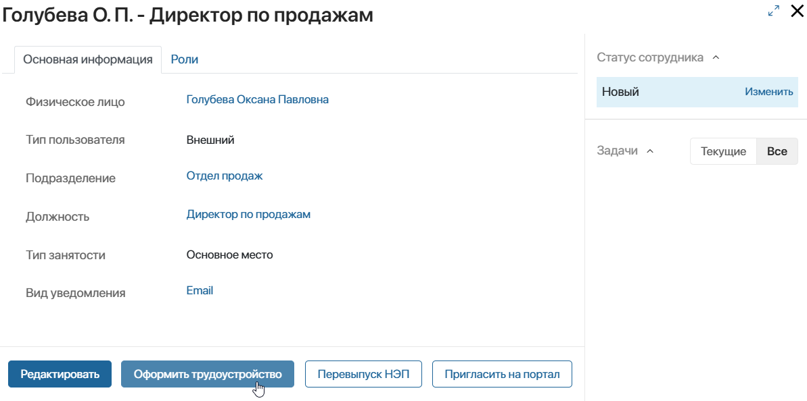
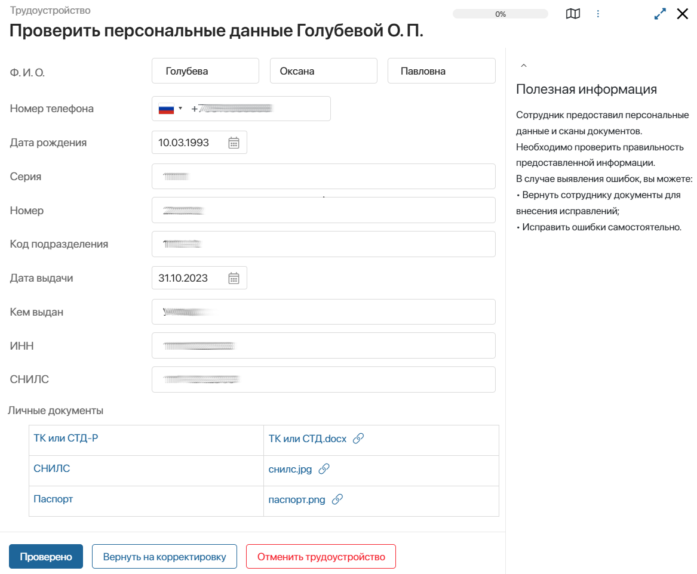
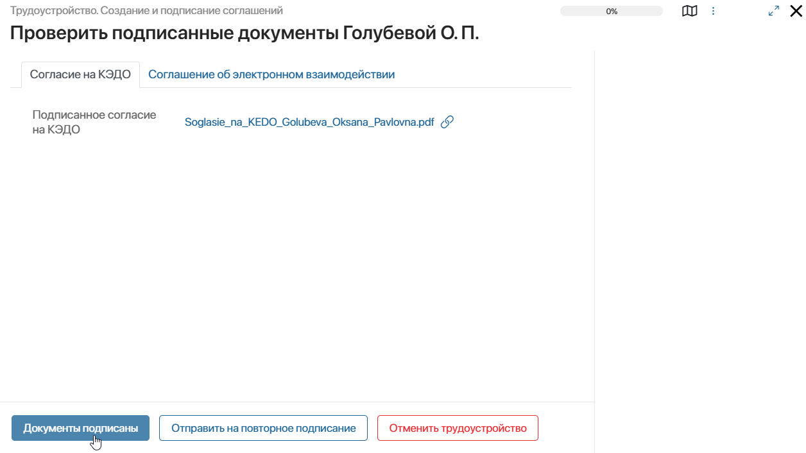
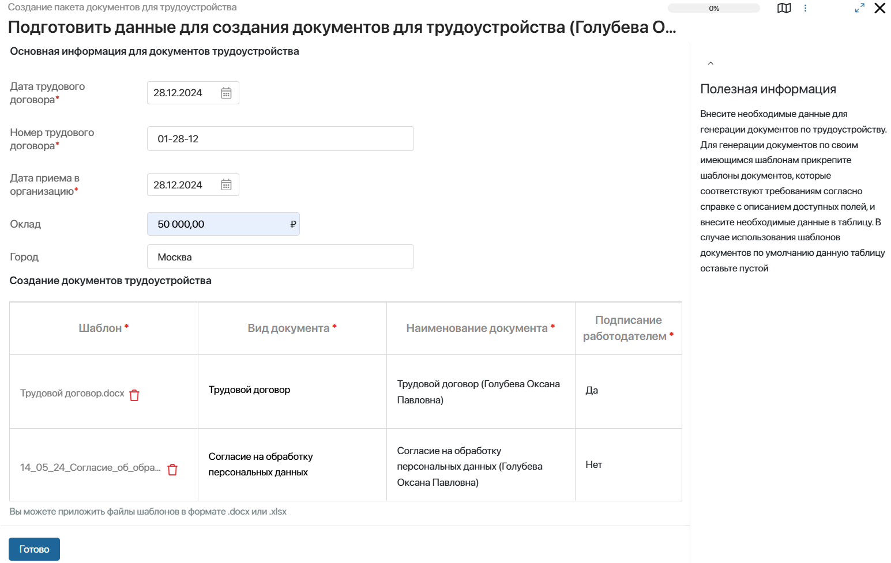

После занесения кандидата в базу сотрудников его необходимо пригласить на Портал КЭДО и трудоустроить в организацию. Тогда он сможет участвовать в кадровых процессах.
Процесс трудоустройства, предусмотренный в ELMA365 КЭДО 3.0, состоит из нескольких этапов и позволяет:
- запросить у кандидата персональные данные и личные документы;
- получить от кандидата согласие на кадровый электронный документооборот и электронное взаимодействие;
- выпустить для сотрудника неквалифицированную электронную подпись;
- запросить подтверждение о прохождении медосмотра (опционально);
- ознакомить с локальными нормативными актами;
- получить подписанный пакет документов для трудоустройства в электронном виде.
Участники процесса трудоустройства
В процессе трудоустройства участвуют следующие сотрудники:
- Сотрудник отдела кадров — исполнитель со стороны организации. Выполняет действия в разделах интерфейса ELMA365: запускает процесс, проверяет предоставленные кандидатом данные и отслеживает выполнение задач;
- Кандидат — сотрудник, трудоустраиваемый на должность. Выполняет этапы процесса приёма на портале КЭДО. Подробнее о действиях кандидата читайте в статье «Зарегистрироваться на портале КЭДО и трудоустроиться в организацию»;
- Подписант — исполнитель со стороны организации, который через разделы интерфейса ELMA365 подписывает документы о приёме кандидата на должность. Как правило в этой роли выступает руководитель организации. При настройке штатного расписания организации ответственный сотрудник может установить подписанта для юридического лица или для каждого подразделения в отдельности.
Ход процесса трудоустройства
Процесс представляет собой этапы, которые выполняются участниками поочередно в рамках задач:
- сотрудники отдела кадров и подписант работают в разделах интерфейса ELMA365;
- трудоустраиваемый на определённую должность кандидат использует Портал КЭДО.
Сотрудник отдела кадров запускает процесс. Затем он ожидает, пока кандидат завершит этап трудоустройства на портале КЭДО. После этого ему автоматически назначается следующая по процессу задача.
В ELMA365 КЭДО 3.0 существует преднастроенный процесс трудоустройства. Администратор системы может также скорректировать его ход и добавить этапы, которые предусмотрены в компании, например, запрашивать у сотрудника подтверждение о прохождении медосмотра. Подробнее о том, как это сделать, описано в статье «Настроить процесс трудоустройства в организацию».
В этой статье рассмотрим шаги преднастроенного процесса, которые выполняются специалистами отдела кадров и подписантом из интерфейса ELMA365 по умолчанию:
- Запуск процесса трудоустройства.
- Проверка персональных данных кандидата.
- Ознакомление с подписанными кандидатом соглашением на кадровый электронный документооборот и согласием на электронное взаимодействие.
- Выпуск сертификата неквалифицированной электронной подписи.
- Подготовка пакета документов для трудоустройства.
- Ознакомление c пакетом документов для трудоустройства и их подписание сотрудником, назначенным на роль подписанта.
- Уведомление сотрудника отдела кадров об успешном завершении процесса трудоустройства.
Запуск процесса трудоустройства
Сотрудник отдела кадров может запустить процесс:
- с карточки создания элемента приложения Сотрудники, нажав кнопку Сохранить и оформить трудоустройство;
- с карточки просмотра элемента приложения Сотрудники, нажав кнопку Оформить трудоустройство и подтвердив действие.

На электронную почту кандидата, указанную в карточке физического лица, придёт письмо с приглашением на Портал КЭДО и файлом Политика обработки персональных данных, с которым можно ознакомиться.
Администратор системы может заменить или отредактировать вложенный в письмо файл. Для этого нужно перейти в настройки раздела КЭДО 3.0, выбрать Шаблоны документов и изменить шаблон Согласие субъекта персональных данных при регистрации.
Кандидату, отмеченному как Внутренний пользователь, предоставляется также доступ к разделам интерфейса ELMA365. На его почту поступит два письма: с приглашением в компанию и на Портал КЭДО.
Проверка персональных данных кандидата
Зарегистрировавшись на портале КЭДО, кандидат заполняет персональные данные и загружает копии документов: Паспорт, ИНН, СНИЛС и т. д.
Список необходимых документов можно указать в карточке создания сотрудника. Администратор системы может определить перечень документов по умолчанию. Для этого нужно перейти в раздел КЭДО 3.0 > Виды личных документов и в карточках документов включить опцию Необходим для трудоустройства по умолчанию.
После заполнения данных на портале КЭДО кандидат направляет их на рассмотрение. Сотрудник отдела кадров получит задачу Проверить персональные данные. Нажав кнопку на её форме сотрудник может:
- продолжить процесс трудоустройства, если данные внесены верно;
- отправить данные на корректировку кандидату, указав причину и комментарий для исправления;
- прервать процесс, завершив трудоустройство.

Проверка подписанных кандидатом соглашений
На следующем этапе трудоустройства кандидату автоматически отправляются Согласие на кадровый электронный документооборот и Соглашение об электронном взаимодействии. Он просматривает и подписывает документы на портале КЭДО.
Затем ему нужно передать оригиналы в организацию. Он может отправить их почтой или передать лично в офисе. Специалист отдела кадров определяет способ передачи оригиналов документов при создании карточки сотрудника.
Когда кандидат завершает задачу, сотруднику отдела кадров нужно проверить подписанные документы. На форме назначенной задачи он может:
- подтвердить проверку документов и продолжить процесс трудоустройства;
- отправить документы кандидату на повторное подписание;
- прервать процесс, завершив трудоустройство.

Выпуск кандидату сертификата электронной подписи
Далее кандидату автоматически выпускается сертификат неквалифицированной электронной подписи. Провайдер, предоставляющий сертификат, определяется на уровне подразделения в процессе настройки штатного расписания.
Если провайдер не найден, специалист отдела кадров получит задачу, на форме которой он указывает провайдера для выпуска электронной подписи и нажимает Далее, чтобы продолжить процесс.
Ознакомление кандидата с локальными нормативными актами
Этап ознакомления с локальными нормативными актами является опциональным. Администратор системы может добавить его при настройке процесса трудоустройства. При этом можно выбрать, какие документы нужно направлять кандидатам на определённые должности.
Листы ознакомления с локальными нормативными актами сохраняются в разделе КЭДО 3.0.
Подготовка и подписание пакета документов для трудоустройства
Чтобы направить кандидату пакет документов для трудоустройства, ответственные сотрудники со стороны организации выполняют следующие действия:
- сотрудник отдела кадров подготавливает необходимые документы. На форме отдельной задачи он заполняет поля для их генерации по шаблону;

- сотрудник, назначенный на роль подписанта, получает задачу рассмотреть и подписать документы.
После того как документы подготовлены и подписаны со стороны организации, они автоматически направляются кандидату. Он рассматривает их на портале КЭДО и подписывает личной электронной подписью.
Сотрудник отдела кадров получает уведомление об успешном завершении процесса трудоустройства.
Прерывание процесса кандидатом
На каждом этапе процесса трудоустройства кандидат может отказаться от выполнения задачи или от приёма на должность. Для этого на портале КЭДО он нажимает соответствующую кнопку и указывает причину решения.
Тогда сотрудник отдела кадров получит задачу, на форме которой он может прервать трудоустройство кандидата или повторно отправить его на предыдущий шаг процесса.
Если процесс прерван, в карточке сотрудника появится статус Отклонен. Этот сотрудник потеряет доступ на портал. Для возобновления процесса, создайте новую карточку сотрудника и запустите трудоустройство.
Если физическое лицо не нужно трудоустраивать в организацию, вы можете заблокировать внутреннего или внешнего пользователя.